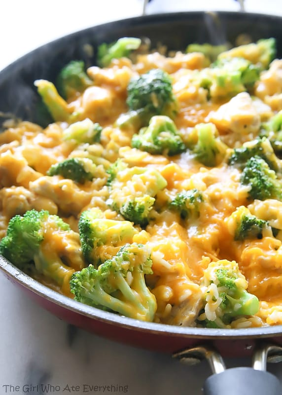

Description
One pan, simple, cheesy, healthy I guess. Let's eat those veggies!
Ingredients
- Olive oil
- 1/2 yellow onion
- 1 pound boneless skinless chicken breast
- 2 cloves of garlic
- salt and pepper
- 1 cup uncooked extra long grain white rice
- 2 1/2 cups of low-sodium chicken broth
- All the broccoli!
- Cheese. Lots of cheese.
Steps
- In a large pan
- Cook onions
- Add garlic, brown the chicken
- Add uncooked rice in olive oil
- Do more stuff